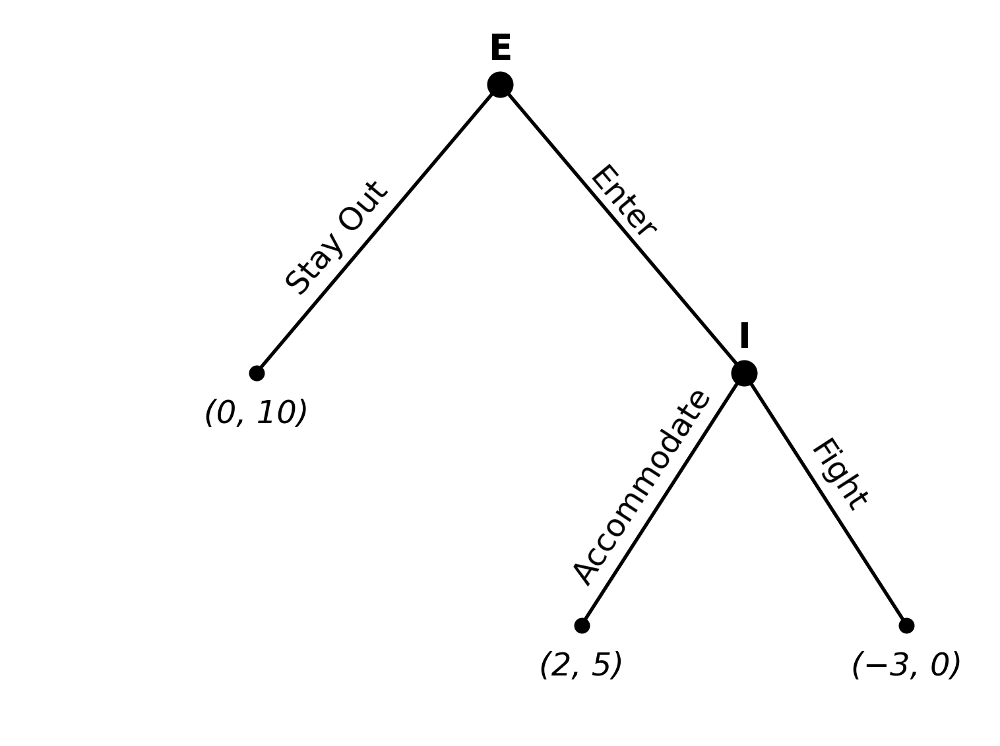

import matplotlib.pyplot as plt
import matplotlib.patches as mpatches
fig, ax = plt.subplots(1, 1, figsize=(8, 6))
ax.set_xlim(-1, 11)
ax.set_ylim(-1, 9)
ax.axis('off')
# Node positions
root = (5, 8) # Entrant's decision
enter_node = (8, 4) # Incumbent's decision
stay_out = (2, 4) # Terminal: Stay Out
accommodate = (6, 0.5) # Terminal: Accommodate
fight = (10, 0.5) # Terminal: Fight
# Draw edges
# Entrant -> Stay Out
ax.annotate('', xy=stay_out, xytext=root,
arrowprops=dict(arrowstyle='-', lw=2, color='black'))
# Entrant -> Enter
ax.annotate('', xy=enter_node, xytext=root,
arrowprops=dict(arrowstyle='-', lw=2, color='black'))
# Incumbent -> Accommodate
ax.annotate('', xy=accommodate, xytext=enter_node,
arrowprops=dict(arrowstyle='-', lw=2, color='black'))
# Incumbent -> Fight
ax.annotate('', xy=fight, xytext=enter_node,
arrowprops=dict(arrowstyle='-', lw=2, color='black'))
# Decision nodes (filled circles)
for pos in [root, enter_node]:
ax.plot(*pos, 'o', markersize=14, color='black', zorder=5)
# Terminal nodes (small dots)
for pos in [stay_out, accommodate, fight]:
ax.plot(*pos, 'o', markersize=8, color='black', zorder=5)
# Player labels
ax.text(root[0], root[1] + 0.25, 'E', fontsize=20, fontweight='bold',
ha='center', va='bottom')
ax.text(enter_node[0], enter_node[1] + 0.25, 'I', fontsize=20,
fontweight='bold', ha='center', va='bottom')
# Action labels
ax.text(3, 5, 'Stay Out', fontsize=18, ha='center', va='bottom',
rotation=50)
ax.text(6.5, 5.75, 'Enter', fontsize=18, ha='center', va='bottom',
rotation=-50)
ax.text(6.75, 1, 'Accommodate', fontsize=18, ha='center', va='bottom',
rotation=57)
ax.text(9.15, 2, 'Fight', fontsize=18, ha='center', va='bottom',
rotation=-57)
# Payoffs (E, I)
ax.text(stay_out[0], stay_out[1] - 0.35, '(0, 10)', fontsize=18,
ha='center', va='top', fontstyle='italic')
ax.text(accommodate[0], accommodate[1] - 0.35, '(2, 5)', fontsize=18,
ha='center', va='top', fontstyle='italic')
ax.text(fight[0], fight[1] - 0.35, '(−3, 0)', fontsize=18,
ha='center', va='top', fontstyle='italic')
plt.tight_layout()
plt.show()